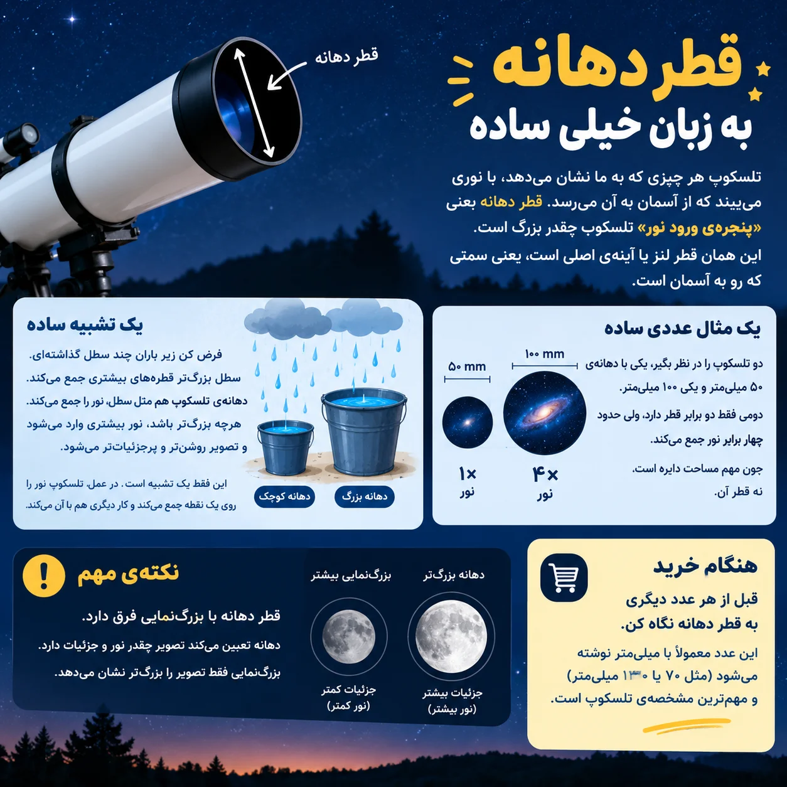

مهمترین عدد برای شناخت توان نوری تلسکوپ را بشناسید؛ از مفهوم سادهی دهانه تا مقایسهی اندازهها، توان تفکیک و انتخاب آگاهانه.
تلسکوپ هر چیزی که به ما نشان میدهد، با نوری میبیند که از آسمان به آن میرسد. قطر دهانه یعنی «پنجرهی ورود نور» تلسکوپ چقدر بزرگ است. این همان قطر لنز یا آینهی اصلی است، یعنی سمتی که رو به آسمان است.
فرض کن زیر باران چند سطل گذاشتهای. سطل بزرگتر قطرههای بیشتری جمع میکند. دهانهی تلسکوپ هم مثل سطل، نور را جمع میکند. هرچه بزرگتر باشد، نور بیشتری وارد میشود و تصویر روشنتر و پرجزئیاتتر میشود. این فقط یک تشبیه است. در عمل، تلسکوپ نور را روی یک نقطه جمع میکند و کار دیگری هم با آن میکند.
دو تلسکوپ را در نظر بگیر: یکی با دهانهی ۵۰ میلیمتر و دیگری ۱۰۰ میلیمتر. دومی فقط دو برابر قطر دارد، ولی حدود چهار برابر نور جمع میکند؛ چون مقدار نور به مساحت دهانه بستگی دارد.
قطر دهانه با بزرگنمایی فرق دارد. دهانه تعیین میکند تصویر چقدر نور و جزئیات دارد؛ بزرگنمایی فقط تصویر را بزرگتر نشان میدهد.
وقتی برای خرید تلسکوپ جستوجو میکنید، اعدادی مثل «۷۰/۷۰۰» یا «بزرگنمایی ۳۵۰ برابر» میبینید. اولین سؤال معمولاً این است: کدام عدد واقعاً مهم است؟ پاسخ ساده است: قطر دهانه مهمترین مشخصهی هر تلسکوپ است. در این مقاله یاد میگیرید این عدد چیست، چه کاری میکند و چطور با آن تصمیم بخرید.
قطر دهانه (Aperture) همان قطر عدسی شیئی در تلسکوپ شکستی یا آینهی اصلی در تلسکوپ بازتابی است. یعنی بخشی از تلسکوپ که نور را جمع میکند.
دهانه مثل پنجرهی یک اتاق است. هرچه پنجره بزرگتر باشد، نور بیشتری وارد میشود. هرچه نور بیشتری وارد شود، اجرام کمنور و جزئیات ریز بهتر دیده میشوند.
دهانه با میلیمتر یا اینچ بیان میشود (هر اینچ ۲۵٫۴ میلیمتر است). در بسیاری از تلسکوپهای مبتدی، دو عدد پشت سر هم نوشته میشود. مثلاً ۷۰/۷۰۰ یعنی دهانه ۷۰ میلیمتر و فاصلهی کانونی ۷۰۰ میلیمتر. این الگو در بیشتر مدلها رایج است، ولی برای اطمینان به مشخصات سازنده هم نگاه کنید.
مقدار نور با مساحت دهانه متناسب است، نه قطر آن. برای مقایسه با چشم غیرمسلح، فرمول سادهی (قطر دهانه ÷ ۷)² کاربرد دارد؛ مثلاً برای دهانهی ۲۰۰ میلیمتر حدود ۸۱۶ برابر چشم.
توانایی دیدن جزئیات ریز به قطر دهانه و کیفیت اپتیک بستگی دارد. معیار مشهور حد داوز، برای دهانه به میلیمتر برابر ۱۱۶ تقسیم بر قطر است و نتیجه بر حسب ثانیهی قوس میآید.
۳. جمعبندی اثر: دهانهی بزرگتر یعنی نور بیشتر و تفکیک بهتر، بهخصوص برای اجرام کمنور. اجرامی مثل کهکشانها و سحابیها کمنور و بزرگاند و به دهانهی بزرگ، بزرگنمایی کم و آسمان تاریک نیاز دارند.
| قطر دهانه | نور نسبت به چشم (تقریبی) | حد داوز (ثانیهی قوس) | مناسب برای |
|---|---|---|---|
| ۵۰ میلیمتر | ۵۱ برابر | ۲٫۳۲ | ماه، دید ابتدایی، مناسب فقط برای شروع بسیار ساده |
| ۷۰ میلیمتر | ۱۰۰ برابر | ۱٫۶۶ | ماه، سیارات درشت، خوشههای روشن |
| ۹۰ میلیمتر | ۱۶۵ برابر | ۱٫۲۹ | رصد عمومی ماه و سیارات |
| ۱۱۴ میلیمتر | ۲۶۵ برابر | ۱٫۰۲ | رصد عمومی + چند جرم کمنور |
| ۱۳۰ میلیمتر | ۳۴۵ برابر | ۰٫۸۹ | رصد عمومی با جزئیات بیشتر |
| ۱۵۰ میلیمتر | ۴۵۹ برابر | ۰٫۷۷ | رصد جدیتر آماتوری |
| ۲۰۰ میلیمتر | ۸۱۶ برابر | ۰٫۵۸ | رصد پیشرفته آماتوری |
تلسکوپ ۱۵۰ میلیمتری حدود ۴٫۶ برابر نور تلسکوپ ۷۰ میلیمتری جمع میکند، یعنی نسبت مساحتها. اما در شرایط واقعی آسمان، توان تفکیک مؤثر میتواند خیلی کمتر از مقدار نظری باشد؛ آشفتگی جو اغلب سقف واقعی را مشخص میکند.
دهانه، بزرگنمایی را مستقیم تعیین نمیکند. بزرگنمایی فقط به فاصلهی کانونی تلسکوپ و چشمی بستگی دارد و اندازهی لنز یا آینهی اصلی در آن نقشی ندارد. ولی دهانه سقف بزرگنمایی مفید را مشخص میکند. منابع در اینباره عددهای متفاوتی میدهند: دو برابر قطر دهانه به میلیمتر، سی برابر قطر به اینچ و سیوپنج برابر قطر به اینچ. برای دهانهی ۷۰ میلیمتر، اینها تقریباً بازهی ۸۰ تا ۱۴۰ برابر میدهند. برای دهانهی ۱۵۰ میلیمتر حدود ۱۸۰ تا ۳۰۰ برابر. در تلسکوپهای ارزان، حد پایینتر عاقلانهتر است.
نور بیشتر، جزئیات بیشتر و امکان دیدن اجرام کمنورتر.
محدودیتها:
دهانهی بزرگتر معمولاً سنگینتر و گرانتر است؛ کیفیت اپتیک، آلودگی نوری و آشفتگی جو هم بر نتیجه اثر میگذارند.
قطر دهانه نخستین عددی است که باید به آن نگاه کنید، ولی تنها عدد نیست. کیفیت اپتیک، پایه، آسمان و مهارت کاربر هم در نتیجهی نهایی اثر دارند. دهانهی بزرگتر در شرایط یکسان، نور و جزئیات بیشتری میدهد.

در شرایط یکسان بله، ولی وزن، قیمت و اپتیک هم اهمیت دارند.
برای دیدن ماه بله. جزئیات سطح مثل دهانهها دیده میشود، هرچند ظرافت تصویر محدود است.
خیر. بزرگنمایی مفید سقف دارد و بعد از آن تصویر فقط بزرگتر و تارتر میشود.
در بسیاری از مدلها یعنی دهانهی ۷۰ و فاصلهی کانونی ۷۰۰ میلیمتر.
دهانه مقدار نور و جزئیات را مشخص میکند. فاصلهی کانونی طول مسیر نور است و با چشمی، بزرگنمایی را میسازد.